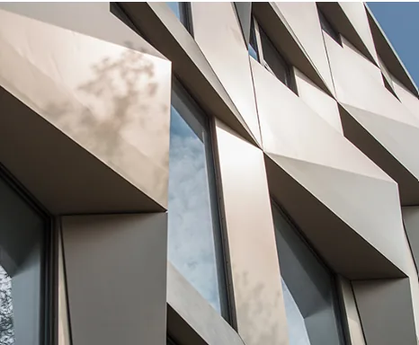
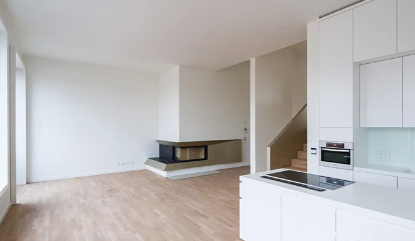
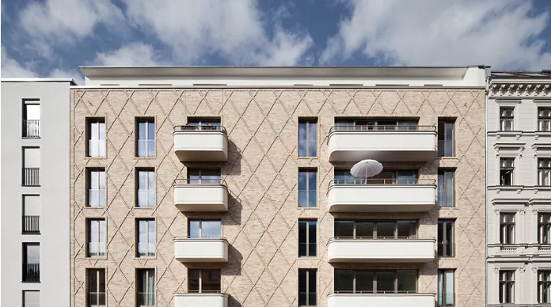
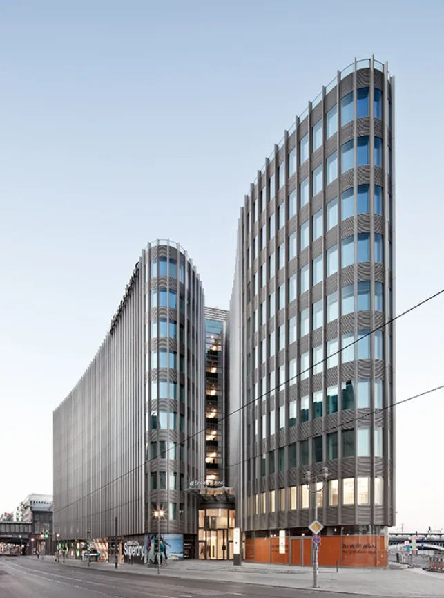
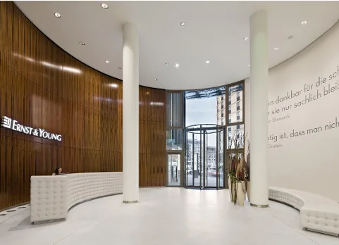
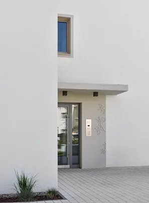

Referenzprojekte in Berlin, Deutschland und Europa
Sieben Projekte aus unserer bisherigen Tätigkeit, von der Altbauwohnung in Berlin bis zum Innenausbau in Verbier: Wohnungsbau, Sanierung, Gewerbe und Innenausbau, teils in leitender Rolle in vorherigen Büros verantwortet.
Marienfelde
Wohnungsbau, Berlin




Saarbrücker Straße
Wohnungsbau, Berlin



Wohnungssanierung Mehringdamm
Sanierung, Berlin


Spreedreieck
Gewerbe & Büro, Berlin




BootHub
Gewerbe & Büro, Potsdam


Cordée des Alpes
Innenausbau, Verbier, Schweiz


Glockenweiß
Wohnungsbau, Berlin


